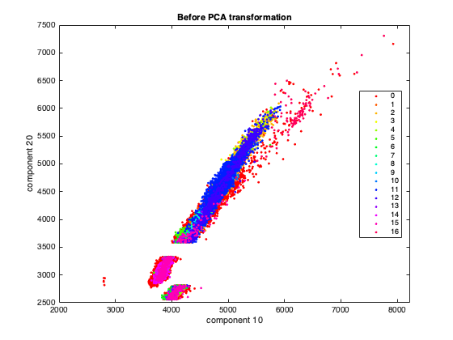
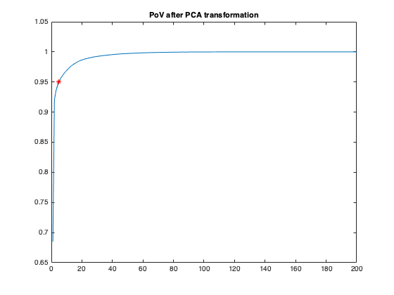
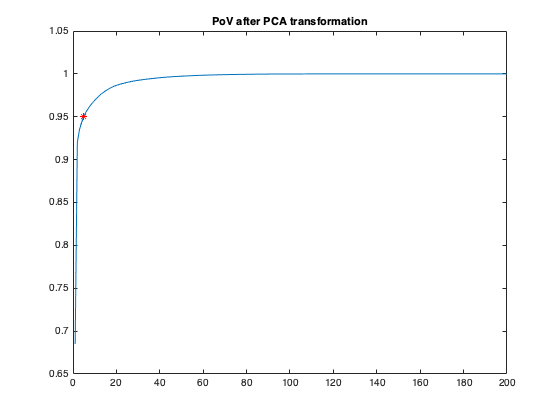
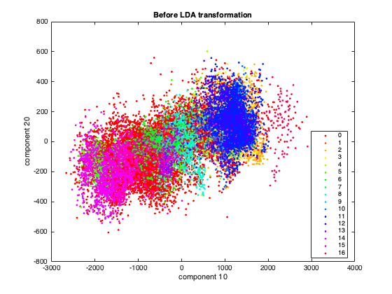
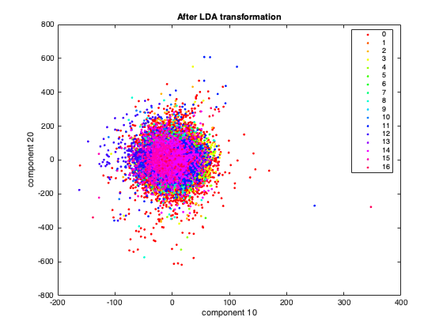
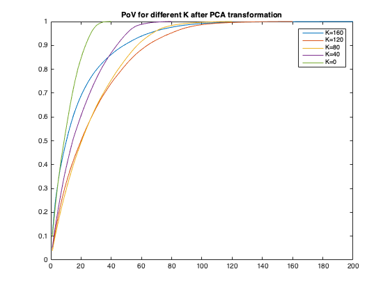

Contents
warning('off');
Data
[row, col, dims] = size(indian_pines_corrected); x = double(reshape(indian_pines_corrected, row*col, dims)); [r, c] = size(indian_pines_gt); classes = reshape(indian_pines_gt, r*c,1);
PCA transformation
Before PCA transformation
figure(1) gscatter(x(:,10), x(:,20), classes) title('Before PCA transformation') xlabel('component 10') ylabel('component 20') % After PCA transformation [coeff,score,latent] = pca(x); pv1 = cumsum(latent/sum(latent)); new_x = score * coeff; figure(2) gscatter(new_x(:,10),new_x(:,20), classes) title('After PCA transformation') xlabel('component 10') ylabel('component 20') figure(3) plot(pv1) hold on plot(5,pv1(5,1), 'r*') title('PoV after PCA transformation') h = sprintf('The k value in the 0.95 varinace is 5'); disp(h)
The k value in the 0.95 varinace is 5
 
 LDA Transformation
[y,~,~] = LDA(new_x,classes); figure(4) gscatter(new_x(:,10), new_x(:,20), classes) title('Before LDA transformation') xlabel('component 10') ylabel('component 20') figure(5) gscatter(y(:,10), y(:,20), classes) title('After LDA transformation') xlabel('component 10') ylabel('component 20') 
Discriminant classification
X = [y(:,10), y(:,20)]; MdlLinear = fitcdiscr(X, classes, 'DiscrimType','linear'); CVmodel = crossval(MdlLinear, 'KFold',5); loss = kfoldLoss(CVmodel); performance = sprintf('the classsification performance is %s',loss); disp(performance)
the classsification performance is 4.867063e-01
Dimentionality Reduction
figure(6) k = 200/5; for i = k:k:200 [coeff,score,latent] = pca(y); new_x = score * coeff; [y,~,~] = LDA(new_x,classes); y = y(:,1:200-i); pv = cumsum(latent/sum(latent)); plot(pv) legend('K=160', 'K=120', 'K=80', 'K=40', 'K=0') hold on title('PoV for different K after PCA transformation') end